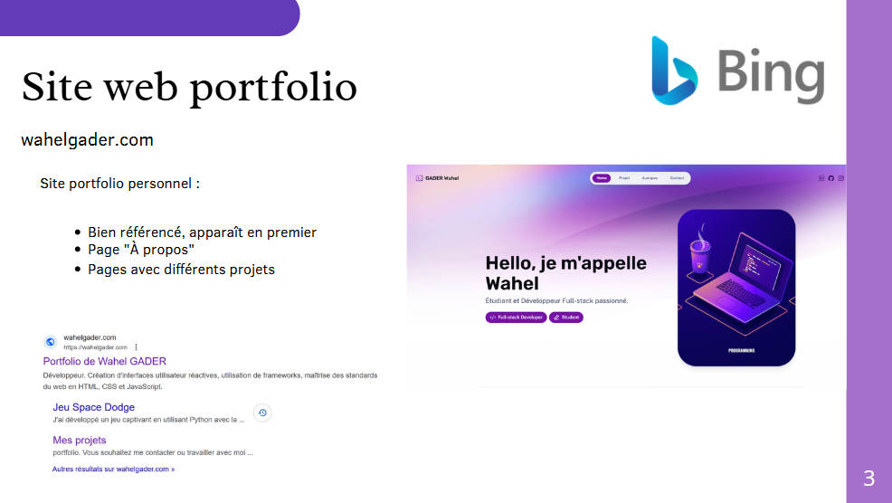
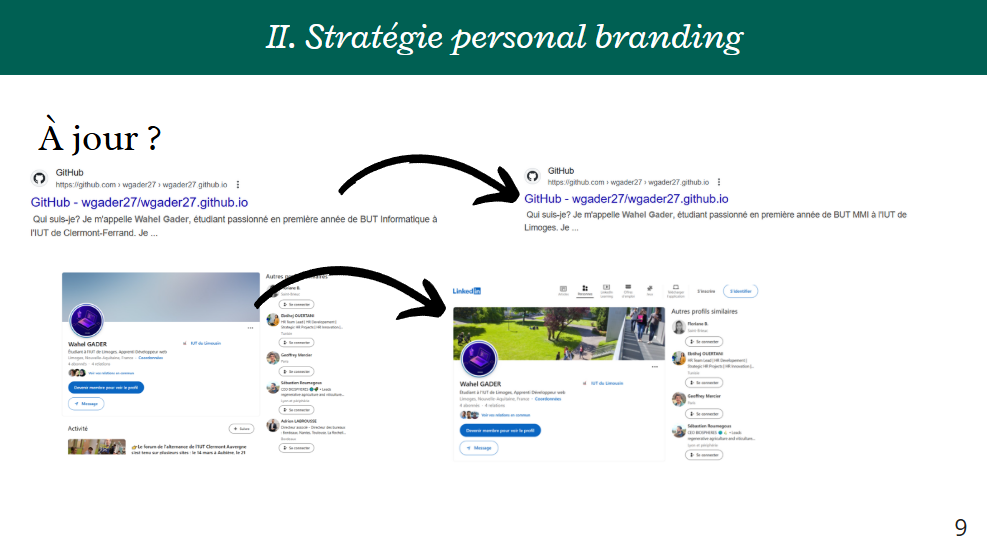

SAE 2.04 - Construire sa présence en ligne
Réalisé en février 2025 dans le cadre du BUT MMI
Objectifs
Cette SAÉ vise à construire une identité numérique professionnelle cohérente avec mon projet personnel et les attentes du marché du travail dans le secteur du numérique. L'objectif est d'analyser l'existant, que ce soit mon propre positionnement ou celui de profils similaires, pour comprendre les enjeux liés à l'e-réputation et au personal branding. Cela permet de poser les bases d'une stratégie de présence en ligne crédible et différenciante. Un autre objectif est de mettre en valeur mes compétences et mes réalisations à travers des supports adaptés tels qu'un site personnel ou des réseaux sociaux professionnels.

Démarche
Notre approche a été structurée en plusieurs étapes clés :
- Analyse de l'identité numérique : étude de l'e-réputation et réflexion autour du cycle "réfléchir, bâtir, entretenir, veiller, nettoyer".
- Choix d'une stratégie de présence en ligne : sélection d'outils adaptés comme un site web ou des réseaux sociaux professionnels.
- Création de supports de communication : présentation orale courte sur mon identité numérique et réalisation d'un Pecha Kucha pour présenter un projet personnel.
- Travail de l'expression orale et écrite : entraînements à l'éloquence et à la prise de parole en public, rédaction et structuration d'un discours argumenté.

Bilan
Cette SAÉ m'a permis de prendre du recul sur ma présence en ligne et de mieux comprendre les enjeux liés à l'image que je renvoie sur Internet. En analysant mes traces numériques et celles de professionnels du secteur, j'ai réalisé à quel point il est important d'être cohérent et stratégique dans ce qu'on publie. J'ai appris à valoriser mes compétences et mes réalisations de manière professionnelle. La réalisation du Pecha Kucha a été un vrai défi, car il fallait être synthétique, clair et percutant, tout en respectant un format très précis. Cet exercice m'a aidé à travailler ma prise de parole et à gagner en aisance orale.

Compétences développées
Construire une présence en ligne professionnelle (personal branding).
Produire un message écrit ou oral professionnel.